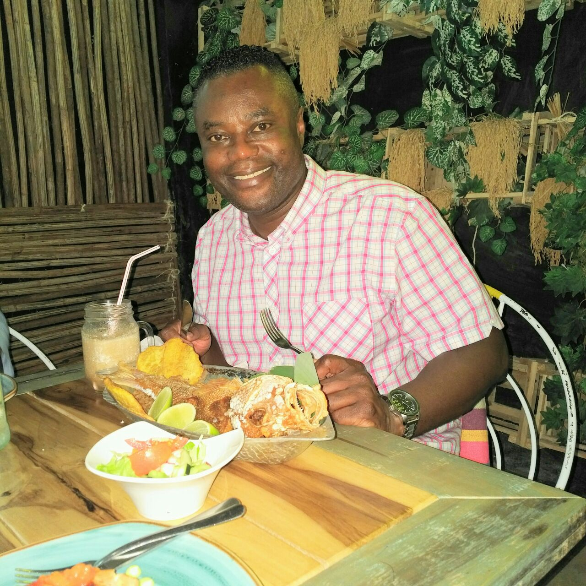

The top 10 countries for the Best Health Care and Best Health Care outcomes such as fewer people who are pre-diabetic or have developed Type 2 Diabetes are European Countries with Canada as the first country outside of Europe and Asia to make the top 20 list.
Photo provided by CDC
In the top 20 countries for the best health care and the best health care outcomes REGISTERED
DIETICIANS do the following;
• Work with families, communities and other professionals to help families achieve
and maintain
good health.
• Provide expertise related to label reading, grocery shopping preparing meals and
snacks for busy
schedules, cooking tips and more.
• Work towards the prevention of childhood obesity.
• Work with individuals who have eating disorders, not lack of MOTIVATION to
exercising/dieting.
Outpatient dietitians work with ALL interprofessional team clinics, the client AND attend
patient/Doctor appointments.
• Community dietitians promote health and prevent disease within their community by
having THEIR
OWN clinic, FUNDED by the government and not an insurance company in the community needing
impact.
• Public health dietitians advise the government on population-wide initiatives to
improve the
health for PREVENTABLE DISEASES.
• Research dietitians ARE PAID BY PHARMACEUTICAL COMPANIES to conduct food and
nutrition research
which promote current, evidence-based professional practice and service.
RD's of America please use "The Flexner Report" as your political guide as to how in a U.S based Healthcare system influenced more by MONEY and POLITICS instead of skill/need you can position yourselves politically to save America/Americans from the development or advancement of metabolically preventable disease. Live in America RD's but we need you to work as if you were in Europe, Canada or Asia.
Photo by Rhys Kentish on UnsplashFrom understanding food ingredients, GI/GL index and the fact that most of us start eating food FIRST before needing medications SECOND Americans need your expertise at the forefront of what we from the cradle to collecting social security checks do everyday and some late at night and that is EAT FOOD.
The use of Metformin and Insulin after over 50 years plus of helping control diabetes type 2 have now become cheap but effective medications for patients so the push now by BIG "P", is to publish studies which will get these medications off the market so that Hmmm some people will start prescribing those new, fancy, expensive medications for metabolically preventable Diabetes Type 2, while not considering potential risks of Heart Failure when resurrecting something old, buried and brought back to shareholders as something new and quite expensive.(AVANDIA). New names, same dynamic.
 Photo by Dr. Colin RossJust FOOD for thought, the Vitamin D market grossed USD 1.1 billion in 2020 and is projected to reach USD 1.6 billion by 2025, at a CAGR of 7.0%. Could that be depressing news for anybody?
RD's we need you to save us from certain foods and growing trends of preventable disease. Also, you can listen to my 6 minute lecture on the GI/GL index and understand why every food should have a GI/GL Label.